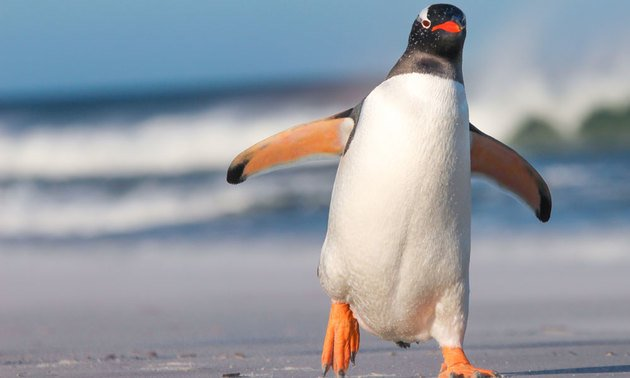

Informações sobre o Pinguim
O pinguim é uma ave marinha adaptada à vida na água e ao clima frio. Eles são conhecidos por sua aparência distinta, com plumagem preta e branca e andar desajeitado.
Existem várias espécies de pinguins, encontradas principalmente no Hemisfério Sul, nas regiões subantárticas e antárticas, bem como na América do Sul, África, Austrália e Nova Zelândia. Eles vivem em colônias densamente povoadas, onde se reúnem para se reproduzir, alimentar e se proteger do frio.
Os pinguins são excelentes nadadores e passam a maior parte de suas vidas na água. Eles se alimentam principalmente de peixes, crustáceos e lulas, e são caçadores ágeis e eficientes sob a água.
Embora os pinguins sejam adaptados ao clima frio, eles enfrentam ameaças como a perda de habitat, poluição, pesca excessiva e mudanças climáticas. Muitas espécies de pinguins estão atualmente ameaçadas de extinção devido a esses fatores.
